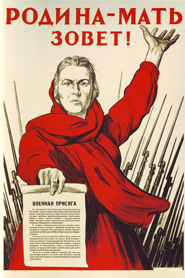
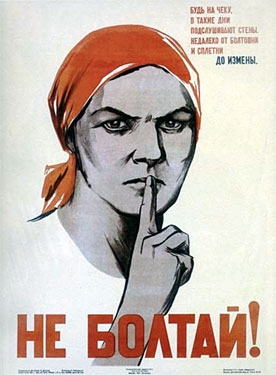

THE MOTHER - MOTHERLAND CALLS!
The socialism victorious in one country does not exclude at once all wars.
On the contrary, it implies them. V.I. Lenin
“The Soviet artist Irakli Toidze - Georgian by birth - was married to a beautiful Russian woman named Tamara. On June 22, 1941, Irakli Moiseevich worked in his studio on the reproduction of the poem "The Knight in the Panther's Skin", when the door suddenly opened and his wife burst into his the room. "War" - was the only word that she cried. She, somehow confused, pointed with her hand somewhere beyond the open door, where on the street a loudspeaker just broadcasted the news of the Soviet Information Bureau that Nazi Germany attacked the Soviet Union. The artist had never seen Tamara Fedorovna in this state. Through the fear and anxiety confusion on her face made its way the mute appeal: "It is urgent to do something!". To run, to save! "Stop and do not move!" - asked Toidze and immediately started doing a sketch after another.
By the end of the month the poster "The Motherland Calls!" was printed in huge quantities and the whole country saw it.
The writer Viktor Suvorov advanced his counter-arguments against the above history of the poster, carefully passed by the family Toidze from generation to generation. In the book "The Day "M" " he states that the "Motherland" poster was created and spread before the war began.” Source
After having read the above article, I asked myself how a country that unexpectedly for its leaders was attacked on 22 June 1941, could print in only nine days the mentioned poster “in huge quantities and the whole country saw it." For this reason I returned to the The Day "M" book that I read some time ago.

I publish below a relevant excerpt from Suvorov's book, from which we learn that the appearance dates of this poster are just another confirmation of the aggression war that Stalin prepared for decades against Europe. I take in advance responsibility for all imprecision of this translation, made after the Russian original, one that didn't appear so far in English translation.
On this page I show as well the poster as a Soviet stamp, issued in 1965, that commemorates 20 years since the end of the war. The title on the paper hold by Tamara reads: Military Oath.
To illustrate the climate of secrecy that characterized (and still characterises, because the Soviet archives were only partially opened, this after over 70 years passed since the beginning of the war) the events related to the war, I show another poster, that reads: Don't Chatter! (Be alert. On days like these the walls are listening. From the chatter and gossip to treason).

The Day “M”, by Viktor Suvorov. 2003. A short excerpt from the introduction.
To my readers
After the release of "Ice Breaker" in Germany I received a three cubic meter (106 cubic feet - VM) mail from former German officers and men: letters, books, diaries, and front-line documents, photos. After the release of "Ice Breaker" in Russia I got even more.
Example. From the official version of the war, we knew that the war broke out and the artist Irakli Toidze in an impulse of noble indignation portrayed Motherland, calling for fight. The poster appeared in the very first days of the war, soon gained worldwide fame and became a graphic symbol of the war, which the Communists called "The great patriotic war".
People write that the poster appeared on the streets of Soviet cities not in the very first days of the war, but in precisely the first one.On the streets of Yaroslavl it appeared in the evening of June 22. In Saratov - "in the second half of the day." On June 22 at Kuibyshev this poster were glued to the walls of wagons military trains. In Novosibirsk and Khabarovsk the poster appeared no later than 23 June.
When, in this case, Irakli Toidze created his masterpiece? Like it or not: before June 22. It turns out that it wasn't made in a noble rage, but before this rage could boil. How did Toidze know about the German attack, if even Stalin had not expected it? A mystery of the history ...
And here comes the explanation. Letter from Argentina.The author is Kadygrov Nikolai. Before the war he was a senior lieutenant to the recruiting office in Minsk . Each recruiting station kept a certain amount of secret mobilization documents, in sealed bags, with a note: "To be opened on the day "M". In the late 1940s the number of these documents has been increasing. And in December came three huge packages with five wax seals each. The same instruction: "To be opened on the day "M".
After six months, on June 22 - the war. What to do with the documents? Molotov said on the radio that the war has begun, but no signal to opening packages. If you open them with no order you will be shot. Therefore the officers are sitting and waiting. And there is no signal. The signal has not arrived. But in the evening it came by phone, as an order: packets with such and such numbers to be destroyed unopened, packets with such and such numbers - to be opened.We were ordered to open one of the three large packs, to remove the seal, and to use the contents as it was supposed to do. We opened it. Inside it was a pack of posters: "The Motherland Is Calling". We used them in the night of June 23. But they did come in December 1940. Therefore the posters were prepared in advance, enough copies were printed for the whole country and they were sent in secret packages to the relevant institutions. They were preparing something. But on June 22 Hitler struck a preemptive strike, and starting from this point many of posters, to put it mildly, have lost their relevance.

|
|
Created:
10/03/2012.
Revised:
1/9/2024.
|